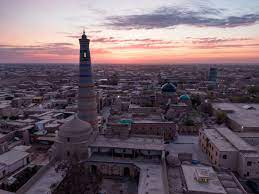
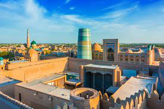

Xorazm |
|||||
| Xorazm |
Xorazm
|
||||
| Toshkent | |||||
| Buxoro | |||||
| Samarqand | |||||
| Navoiy | |||||
| Farg'ona | |||||
| Jizzax | |||||
| O'zbekiston | |||||
| Namangan | |||||
| Qashqardaryo | |||||
| Sirdaryo | |||||
| Surxandaryo | |||||
| Andijon | |||||
Xorazm viloyati Vikipediya, ochiq ensiklopediya Navigatsiya qismiga oʻtishQidirish qismiga oʻtish Xorazm viloyati Mamlakat Oʻzbekiston Maʼmuriy markazi Urganch Hokim Farhod Ermanov Aholi (2022) 1,924,167 Maydoni 6 300 km² Xorazm viloyati xaritada Xorazm viloyati, Xarita Soat mintaqasi UTC+5 Qisqacha Jaloliddin Manguberdi ordeni.jpg Kod ISO 3166-2 UZ-XO Avtomobil raqami kodi 90 Rasmiy sayti xorazm.uz Koordinatalari: 41°20′0″N 61°0′0″E G O Xorazm viloyati — Oʻzbekiston Respublikasi tarkibidagi viloyat. 1925-yil fevraldan 1938-yil yanvargacha Xorazm okrugi, 1938-yil 15-yanvarda viloyat maqomiga o'tkazilgan. Umumiy maydoni — 6 300 kvadrat kilometr. Iqlimi kontinental, oʻrtamiyona sovuq qish va quruq issiq yoz boʻladi. Viloyat aholisi 1 930 747 kishi, zero, taxminan 60 foizi chet (qishloq) joylarda yashaydi. Viloyat 12 ta maʼmuriy tumanga ajratilgan, maʼmuriy markazi Urganch. Urganch aholisi 200 000 kishi. Viloyatning boshqa katta shaharlari — Xiva va Pitnak.[1] Hududlar kesimidagi aholi soni[2]: Urganch tumani – 205 480 kishi, Hazorasp tumani – 198 657 kishi, Xonqa tumani – 191 620 kishi, Qo‘shko‘pir tumani – 176 059 kishi, Shovot tumani – 174 352 kishi, Bog‘ot tumani – 169 486 kishi, Gurlan tumani – 151 950 kishi, Xiva tumani – 149 698 kishi, Urganch shahri – 146 709 kishi , Yangiariq tumani – 118 925 kishi, Xiva shahri – 95 246 kishi, Yangibozor tumani – 89 427 kishi, Tuproqqal’a tumani – 56 558 kishi. Viloyatda 32 ta xorijiy investitsiyali qoʻshma korxona faoliyat yuritadi. Ular byudjeti 1997-yilda 301,7 million AQSh dollarini tashkil etdi. Viloyat iqtisodiyoti paxtani qayta ishlash va oziq-ovqat sanoatiga asoslangan. Koʻp sonli paxta tozalash zavodlari, neft qazib oladigan va ipak yigiradigan fabrilar, toʻqimachilik va vinochilik korxonalari va hokazo bor. Shuningdek qurilish materiallarini ishlab chiqarish taraqqiy etgan. Xiva gilam fabrikasida tayyorlangan gilamlar butun dunyoga mashhur. Mashinasozlik va toʻqimachilik tarmoqlari rivojlanib bormoqda. Mahalliy qishloq xoʻjaligining asosiy yoʻnalishi — albatta, paxtadir. Boshoqlilar, ayniqsa, guruch etishtirish soʻnggi bir necha yilda keskin oshdi. Shuningdek, koʻplab bogʻ va uzumzorlar, qovun va qovoq plantatsiyalari bor, kartoshka dalalari butun viloyatni qamrab olgan. Shakar tozalash zavodi qurilishi rejalashtirilmoqda. Viloyat iqtisodiy jihatdan oʻsishga tayyor. Mazkur sohalarga eʼtibor qaratilsa, quyidagilarga erishish ehtimol qilinmoqda: Paxta, ipak xom ashyosi va boshqa mahalliy zahiralardan foydalanadigan mavjud korxonalarni taʼmirlash, texnik zamonaviylashtirish va kengaytirish. Paxta tolasini qayta ishlash jarayonini yaxshilash va oshirish, ip, gazlama, paxta yigiruv ipi va gilamlar tayyorlash va eksport qilish zarur. Mavjud oziq-ovqat sanoati tarmoqlarini yangilash va yangilarini, ayniqsa, mevalar, uzum, sabzavot, qovun va qovoq bilan bogʻliq korxonalarni tashkil etish. Goʻsht-sut mahsulotlariga asoslangan korxonalar kengaytirilishi kerak. Oʻrab-joylash uskunalarini ishlab chiqarish. Idish materialarining yetishmasligi — eksportga moʻljallangan tomat pastasi, oʻsimlik yogʻi, turli turdagi jem va marmeladlar ishlab chiqarish yoʻlida jiddiy toʻsiq boʻlmoqda. Ushbu loyihalarni amalga oshirish uchun viloyatga xorijiy investitsiyalar koʻrinishida qariyb 52,1 million AQSh dollari zarur. Xorazm viloyati temir yoʻllari umumiy uzunligi 130 km dan ortiq. Viloyat Rossiyaning Yevropa qismi va Kavkaz bilan temir yoʻl orqali bogʻlangan. Yoʻllarning umumiy uzunligi — 2 300 km, shoh koʻchalar 2 000 km masofaga yaslangan. Viloyat aviareyslari Xorazmni butun Markaziy Osiyo, shuningdek Rossiya mintaqalarining katta qismi va MDH bilan birlashtiradi. Xiva — xalqaro sayyohlikning katta markazi. 1997-yilda Xiva oʻzining 2500-yilligini nishonladi. Xiva atrofida sayyohlikni yanada rivojlantirish uchun koʻp ishlar qilindi. Respublikaning shimoli-gʻarbida, Amudaryo quyi oqimining chap sohilida. Shimoliy va shimoli-sharqdan Qoraqalpogʻiston Respublikasi, janubiy va janubi-gʻarbdan Turkmaniston, janubi-sharqdan Buxoro viloyati bilan chegaradosh. Tarkibida 11 qishloq tumani (Bogʻot, Gurlan, Urganch, Xiva, Xonqa, Shovot, Yangiariq, Yangibozor,Qoʻshkoʻpir, Hazorasp va Tuproqqal’a), 3 shahar (Urganch, Xiva, Pitnak), 7 shaharcha (Gurlan, Xonqa, Chalish, Shovot, Yangibozor, Qoʻshkoʻpir, Hazorasp), 100 qishloq fuqarolari yigʻini bor. Markazi — Urganch shahri. Mundarija 1 Tabiati 2 Hududiy boʻlinishi 3 Xoʻjaligi 4 Sanoati 5 Transporti 6 Madaniy maorif, sogʻliqni saqlash va sport 7 Sogʻliqni saqlash 8 Sport 9 Adabiyoti 10 Matbuot, radioeshittirishi va televideniyesi 11 Meʼmoriy yodgorliklari 12 Adabiyotlar 13 Manbalar Tabiati
Viloyat choʻl zonasida, Xorazm vohasining gʻarbiy qismida, oʻrtacha 100 m balandlikda joylashgan. Relyefi pasttekislikdan iborat. Amudaryo qad. deltasining bir qismi boʻlib, daryo yotqiziqlaridan tashkil topgan. Qoraqum choʻliga tutashgan gʻarbiy va janubi-gʻarbiy qismi qum bilan qoplangan. Foydali qazilmalardan ohaktosh, qum, gil va boshqa qurilish materiallari bor. Iqlimi keskin kontinental. Qishi moʻtadil sovuq, qor kam yogʻadi, yanvarning oʻrtacha tempaturasi −5°, eng past temperatura −32°. Yozi issiq, quruq, iyulning oʻrtacha temperaturasi 30°, eng yuqori tempatura 47°. Vegetatsiya davri 200-210 kun. Yiliga 78–79 mm yogʻin tushadi, asosan, mart-aprel oylarida yogʻadi. Shimoliy va shimoli-sharqiy shamollar esadi. Yagona daryosi — Amudaryo viloyat hududida keng vodiy boʻylab oqadi, qirgʻoqlari past, shu sababli toshqin boʻlib turadi. Toshqinga qarshi dambalar qurilgan. Amudaryo suvidan yirik kanallar yerdamida ekinlarni sugʻorishda foydalaniladi. Viloyat janubida mayda shoʻr koʻl, botqoqlik va shoʻrxok koʻp. Tuproqlari Amudaryoning allyuvial yotqiziqlaridan tashkil topgan. Daryo vodiysida oʻtloqi, oʻtloqibotqoq tuproqlar, gʻarbida qumliklar uchraydi. Sugʻoriladigan yerlarda, asosan, boʻz tuproq boʻlib, kuchli shoʻrlangan. Viloyat hududining asosiy qismi haydaladigan yerlar. Amudaryo qirgʻoqlaridagi toʻqayzorlarda terak, tol, jiyda, yulgʻun, kandir, qumliklarda saksovul va boshqa oʻsimliklar oʻsadi. Yovvoyi hayvonlardan, asosan, kemiruvchilar, sudraluvchilar, toʻqayzorlarda toʻqay mushugi, chiyaboʻri; qushlardan toʻrgʻay, oʻrdaklar, kulrang gʻoz, oqqush, birqozon, baliqchi, dehqonchumchuq, qizilishton, zargʻaddoq va boshqalar bor. Suv havzalarida ondatra va nutriya iqlimlashtirilgan. Aholisi, asosan, oʻzbeklar (96,3 %), shuningdek, turkman, rus, qozoq, tatar, koreys, qoraqalpoq va boshqa millat vakillari ham yashaydi. Aholining oʻrtacha zichligi 1 km² ga 231,6 kishi. Shaharliklar 321,7 ming kishi, qishloq aholisi 1091 ming kishi (2004). Hududiy boʻlinishi Xorazm districts.png Tuman nomi Tuman markazi 1 Bogʻot tumani Bogʻot 2 Gurlan tumani Gurlan 3 Xonqa tumani Xonqa 4 Hazorasp tumani Hazorasp 5 Xiva tumani Xiva 6 Qoʻshkoʻpir tumani Qoʻshkoʻpir 7 Shovot tumani Shovot 8 Urganch tumani Qorovul (qishloq) 9 Yangiariq tumani Yangiariq 10 Yangibozor tumani Yangibozor (Yangibozor tumani) 11 Tupproqqalʼa tumani Pitnak Qadimda Xorazmda yashovchi oʻzbeklar qabilalari bir necha etnik guruhlar boʻlib, ular Abulgʻoziy Bahodirxon (1643-64) tomonidan 4 guruh (toʻp)ga boʻlingan. Har bir guruhga 2 qabila (1 guruhga uygʻur va nayman, 2 siga qoʻngʻirot va qiyot, 3siga nukuz va mangʻit, 4siga qangʻli va qipchoqlar) birlashtirilgan. Shuningdek, bir necha qabila qoldiqlari (jaloyir, kenagas, doʻrmon, yuz, ming, shix, katagon) va ayrim etnik guruxlar (alieli, xoʻjaeli va. sayidlar) mavjud boʻlgan. Amudaryodan suv oladigan kanallar va sugʻoriladigan yerlarning katta qismi shu qabila va urugʻlarga taqsimlab berilgan va ular astasekin oʻtroqlashib, dehqonchilik bilan shugʻullanganlar. Qolgan guruxlar Xorazmda juda kam boʻlib (bular qoʻngʻirotlar va boshqalar) viloyatning Gurlan va Shovot tumanlari, mangʻitlar Gurlan tumani va Shovot tumani (AnbarManaq)da, qiyotlar Shovot tumanida, qipchoqlar Urganch, Shovot va Qoʻshkoʻpir tumanlari, doʻrmonlar Urganch va Shovot (Anbar Manaq) tumanlarida, xidireli Urganch va Xivada, tama Xonqa va Bogʻot tumanlarida joylashgan. Xoʻjaligi Xorazm viloyati iqtisodiyotida qishloq xoʻjaligi bilan birga sanoat ham salmokdi oʻrinni egallaydi. Paxta tolasi, kalava ip, gilam, oziq-ovqat mahsulotlari, mashina uskunalari eksport qilinadi. Sanoati Viloyatda paxta tozalash sanoati rivojlangan (barcha tuman markazlari va Urganch shahrida paxta tozalash zavodlari bor). Gurlan, Bogot, Xonqa, Urganch, Xiva va Hazoraspda toʻqimachilik, pillakashlik, tikuvchilik; Xivada gilam fabrikasi, „Xiva gilami“ aksiyadorlik jamiyati ishlab turibdi. Faoliyat koʻrsatayotgan jami korxona va tashkilotlar 13748 ta. Mikrofirmalar soni 11340 dan ziyod (2004). Viloyatda 36 qoʻshma korxona va ularning filiallari ishlab turibdi. Oʻzbekiston — Turkiya „Bagat Tekstil“, „Xorazm-Nurtop“, „SemurgʻSanTe“, „Xorazm Tekstil“, „Memgilam“; Oʻzbekiston — AQSH „Amerozindustriyes“, „Xiva malikasi“, „Nurlayt“, „Rahnamo Hyp“; Oʻzbekiston — Germaniya „Unixo“, „OʻzOlmonXotelz“, „Xiva Karpet“; Oʻzbekiston- Britaniya „Xiva“; Oʻzbekiston-Rossiya „NamunaAgrofud“; Oʻzbekiston — Italiya „Meva“; Oʻzbekiston-Ukraina „KiyevXorazm“; Oʻzbekiston — Xitoy „Aziya Tekstil LTD“; Uzbekistan-Turkmaniston „GʻayratXumoyun“ va boshqa shular jumlasidandir. Qishloq xoʻjaligi asosini paxtachilik va gʻallachilik tashkil etadi. Polizchilik, sabzavotchilik, bogʻdorchilik, chorvachilik, pillachilik ham rivojlangan. Shirkat, ijapa va xususiy fermer, dehqon xoʻjaliklari, aksiyadorlik jamiyatlari faoliyat koʻrsatadi. Viloyatda jami ekin maydoni 232,1 ming ga, shundan 129,4 ming ga q.h. shirkatlari (69 ming ga yer xususiy fermerlar, 33,7 ming ga yer dehqon xoʻjaliklari)ga tegishli. Umumiy yer fondining 38,4 % haydaladi, 18,2 % yaylov, oʻtloq, 1,3 % bogʻ va tokzor; oʻrmon va changalzorlar 9,6 % ni, tutzorlar 0,9 %ni tashkil etadi. 1991-2003-yillarda kanal va ariqlar rekonstruksiya qilinib, suv yoʻllarining umumiy uzunligi koʻpaydi. Xorazm viloyatidagi shoʻr suvlar viloyat tashqarisiga zaxkashlar orqali chiqarib tashlanadi. Viloyatda irrigatsiya va melioratsiya ishlariga alohida eʼtibor berib kelinmoqda. Jami ekin maydonining 102,3 ming gektariga paxta, 86 ming gektariga don, 3 ming gektariga kartoshka, 9 ming gektariga sabzavot ekiladi (2003). Don (asosan, bugʻdoy, sholi) yetishtiriladigan maydonlar kengaydi. Xorazm viloyati mamlakatda sholi yetishtirish boʻyicha 1oʻrinda turadi. Viloyat jamoa va xususiy xoʻjaliklarida 492,3 ming qoramol (shu jumladan, 202,1 ming sigir), 247,1 ming qoʻy va echki, 1437,6 ming parranda boqiladi. 6500 dan ziyod fermer xoʻjaligi chorvachilikka ixtisoslashgan. Urganch, Xiva parrandachilik fabrikalari faoliyat koʻrsatadi. Xorazm viloyatida Paxtachilik ilmiy tadqiqot stansiyasining paxtachilikbedachilik zonal kompleks tajriba styasi (Urganch shahrida), Qoraqum ilmiy tadqiqot stansiyasi, paxta navlarini tajriba qilish uchastkasi (Xiva tumanida), mevali daraxtzorlar koʻchatzori, oʻrmon koʻchatzori (Urganch tumanida) va boshqa bor. 1996-2004-yillarda Islom Bobojonov, Masharip Quvoqov, Bekturdi Jumaniyozov, Vera Pak, Anor Mahmudova „Oʻzbekiston Qahramoni“ unvoniga sazovor boʻldilar. Transporti Xorazm viloyati orqali Toshkent- Moskva, Dushanba-Moskva temir yoʻl oʻtgan, Urganch — Toshkent yoʻnalishida poyezdlar qatnaydi. Transport yoʻli uzunligi 128 km (2004). Amudaryo ustiga qurilgan Hazorasp temir yoʻl koʻprigi ishga tushirilib (Hazorasp yaqinida, 2004), Hazorasp — Miskin — Toshkent temir yoʻl masofasi qisqardi. Koʻprik har sutkada 14 poyezd, 20 ming avtomobil oʻtkazish imkoniyatiga ega. Koʻprik strategik ahamiyatga ega. Viloyatdagi qattiq qoplamali avtomobil yoʻllarining uz. 2750 km (2004). Xiva-Urganch yoʻnalishida trolleybus qatnovi (1997-yildan) yoʻlga qoʻyilgan. Urganch, Xiva shaharlaridan Toshkent, Samarqand, Navoiy, Buxoro, Nukus va boshqa shaharlarga avtobuslar katnaydi. Urganch sh. xalkaro va mahalliy yoʻnalishlar aeroportlaridan xorijiy davlatlar (shu jumladan, Parij, Tokio, Munhen, Tel-Aviv, Moskva, Simferopol va boshqalar) shuningdek, Toshkent, Nukus va boshqa shaharlar bilan muntazam aviatsiya aloqasi oʻrnatilgan. Viloyat orqali Oʻrta Osiyo — Markaz, Buxoro — Ural, Turkmaniston — Rossiya xalqaro gaz magistral quvurlari oʻtkazilgan. Madaniy maorif, sogʻliqni saqlash va sport 2003/04 oʻquv yilida 537 umumiy taʼlim maktabi (shu jumladan, 47 ixtisoslashgan maktab, gimnaziya, instituternat maktabi) boʻlib, 335,4 mingga yaqin oʻquvchi taʼlim oldi. 1997-yilda Xorazm tasviriy va amaliy sanʼati litseyi ochildi. Viloyatdagi 57 kasb-hunar kolleji va oʻrta maxsus bilim yurtlarida 34 mingdan ziyod talaba oʻqiydi (2004). Oʻzbekiston Respublikasi Prezidenti Islom Karimovning tashabbusi bilan Xorazm Mamun akademiyasi qayta tiklandi, pedagog kadrlar tayyorlashga ixtisoslashgan viloyat ped. instituti (1935 — 1992) AlXorazmiy nomidagi Urganch universitetitl aylantirildi. Urganch davlat universiteti, Toshkent davlat 1tibbiyot institutning Urganch filialida 7460 talaba taʼlim oladi (2004). Oʻzbekiston Fanlar akademiyasi arxeologiya regional boʻlimi, paxtachilik, Qoraqum ilmiy tadqiqot stansiyalari faoliyat koʻrsatadi. Xorazm viloyatida Xiva davlat „Ichan salʼa“ tarixiymeʼmorlik muzeyqoʻrikxonasi va uning filiallari, 424 jamoat kutubxonasi (5 mln. asar), 302 klub muassasasi, madaniyat uylari va madaniyat saroylari, 10 ga yaqin madaniyat va istirohat bogʻi, Xorazmiy, Beruniy, Jaloliddin Manguberdi, Avesto yodgorlik bogʻmajmualari, „Orazibon“, „Avazxon“, „Doston“ folkloretnofafik xalq dastalari, "Muborak, „Yulduz“, „Navbahor“, „Xiva naqshlari“ ashula va raqs dastalari, milliy dorbozlar guruhi, koʻplab badiiy havaskorlik jamoalari bor. Ogahiy nomidagi viloyat musiqali drama va komediya teatri, viloyat qoʻgʻirchoq teatri (Xiva shahrida) ishlab turibdi. Xorazm musiqiy hayoti Xorazm vohasida qadimgidan yashab kelayotgan xalqlarning turmush tarzida muhim oʻrin egallagan. Qadimgi Xorazm hududidagi Qoʻyqirilganqalʼa, Tuproqqalʼa, Qirqqizqalʼa kabi istehkomlardan topilgan va asl nomlari saqlanmagan torli (dutorsimon, changkanora, arfaga oʻxshash), damli (nay, mizmar), zarbli (daf va nogʻoraga oʻxshash) cholgʻu sozlarni ushlagan ayol va erkaklar tasvirlari tushirilgan tangalar va ganch haykalchalar bu voha musiqa sanʼatining ildizlari juda qad. ekanligidan dalolat beradi. 8-asr boshidagi arablar istilosi oqibatida Qadimgi Xorazm madaniyati va sanʼati xarobalikka yuz tutib, islom madaniyatining yangi anʼanalari taraqqiy eta boshladi. Xorazmiy, Beruniy, Abu Abdullo ibn Yusuf Xorazmiy (10-asr) va boshqa olimlarning qomusiy asarlarini musiqaga bagʻishlangan qismlarida musiqani hisob ilmining tarkibiy boʻlagi va uni inson ruhiyatiga taʼsiri taʼriflanadi. „Mafotix ululum“ asarida oʻsha davrdagi mavjud cholgʻular: ud, changkanora, qanun, tanbur, mizmar, argʻanun, nay, surnaylarning nomlari keltirilgan. Oʻsha davrda Gurganjda cholgʻu asboblar yasovchi ustalar mahallasi boʻlgan. Muhammad Xorazmshoh davrida (1200-21) mashhur sozanda ustod Mahmud, Yusufbek Dutoriy kabi sozandalar edda tanilgan. 14-asrda yashagan „Muhabbatnoma“ dostonining muallifi Xorazmiy, Abdurahim Hofiz Xorazmiy, ayniqsa, Alisher Navoiyning „Sabʼai sayyor“ dostonida va boshqa klassik shoirlarning gʻazallarida oʻsha davr maqomlari, sozandalari va cholgʻulari yuksak did bilan taʼriflanadi. Shuningdek, sanʼatkorlar homiysi Sulton Vayis (Uvays), baxshilar piri Oshiq Oydinlar ham shu davrda yashaganlar. Muhammad Rahimxon (1806-25) davriga kelib Niyozjonxoʻja va uning shogirdlari Mahdumjon qozi, Muhammadjon Sandiqchi, Abdusattor maxram, uning shogirdi Xudoybergan kosib va boshqa tanbur maqomlarini rivojlanishiga katta hissa qoʻshdilar. Komil Xorazmiy Xorazm maqomlarini oʻzi ixtiro kdlgan „ Tanbur chizigʻi“ asosida qogʻozga tushirishni boshlab bergan yetuk musiqashunoslardan hisoblanadi. 1883-yilda dastlab Xorazm maqomlari tarkibidagi „Rost“ maqomi, keyin, bu ishni davom qildirib oʻgʻli Muhammad Rasul Mirzo Xorazm maqomlaridan Buzruk, Navo, Dugoh, Segoh, Iroq va Rostlarni qogʻozga tushirgan. Bu davrda Otash baxshi, Nurjon baxshi va, ayniqsa, Eshvoy baxshi hamda uning shogirdi Muhammadniyoz Gurji kabi baxshilar nom qozonganlar. Nomlari nomaʼlum boʻlgan ustoz sozandalar va baxshilar tomonidan Xorazm dutor yoʻllari jamlanib 11 ta dutor maqomi shakllangan. Mashhur sozanda va nafis taʼb egasi Muhammad Rahimxon Soniy (Feruz) xonlik davri (1864-1910) ga kelib Xorazmda musika sanʼati yanada rivoj topdi. Feruz saroyida 40 dan ortiq shoir, 20 ga yakin maqomchi sozandalarni toʻplab mushoira va maqom kechalarini oʻtkazib turardi. Saroy maqomchilari orasida Paxlavon Niyoz Mirzaboshi Komil, Muhammad Yoqub Devon Xarrot, Yoqub fozachi, Qalandar Doʻnmas va boshqa maqomlarning cholgʻu va aytim qismlarini boyitganlar. Feruzning oʻzi ham maqom cholgʻu qismlariga 14 ga yaqin kuy bastalagan. Bu davrda 40 dan ortiq baxshi, 32 sozanda qoʻshlari (sozandalarning jamlangan dastasi) faoliyat koʻrsatgan. Ular sayil va bayramlarda xonning koʻrigidan oʻtar va elyurtning tomoshasini oʻtkazishga fatvo olar edilar. Baxshilar ichida mashhurlari: Rizo baxshi, Ernazar baxshi, Suyav baxshi; sozanda qoʻshlaridan elga tanilgan namoyandalardan Shomurod surnaychi va boshqa boʻlgan. 1910-yil Xiva xonligi taxtiga Asfandiyorxon oʻtirganidan keyin saroy shoir va sozandalari tarqab ketdi.